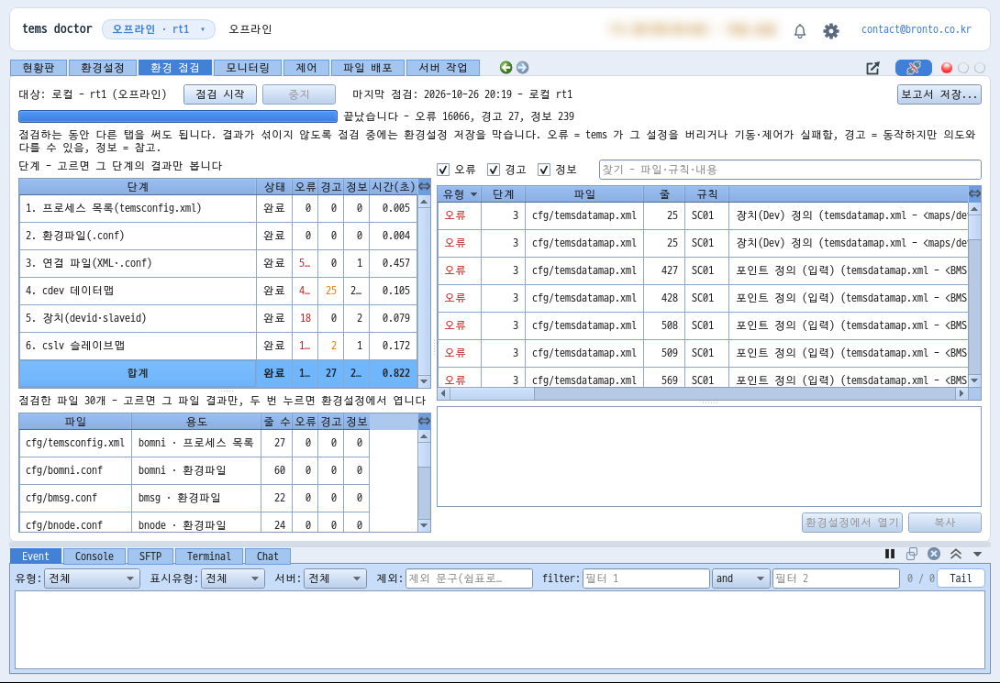
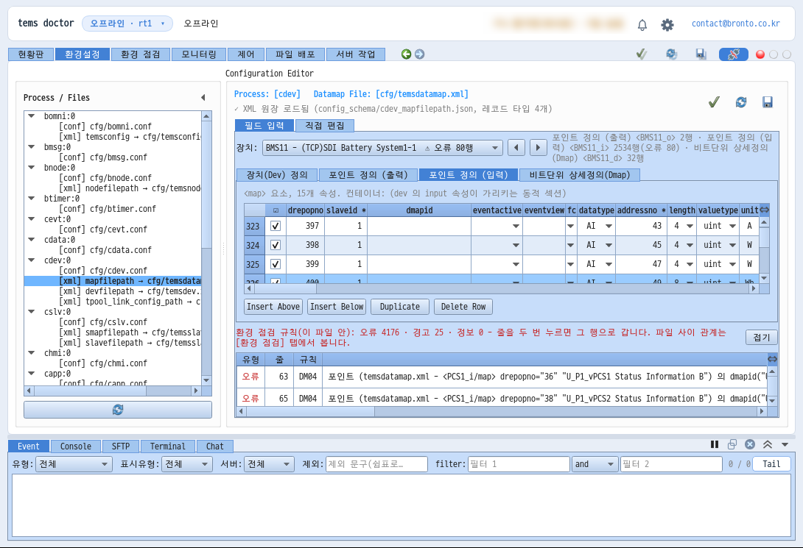
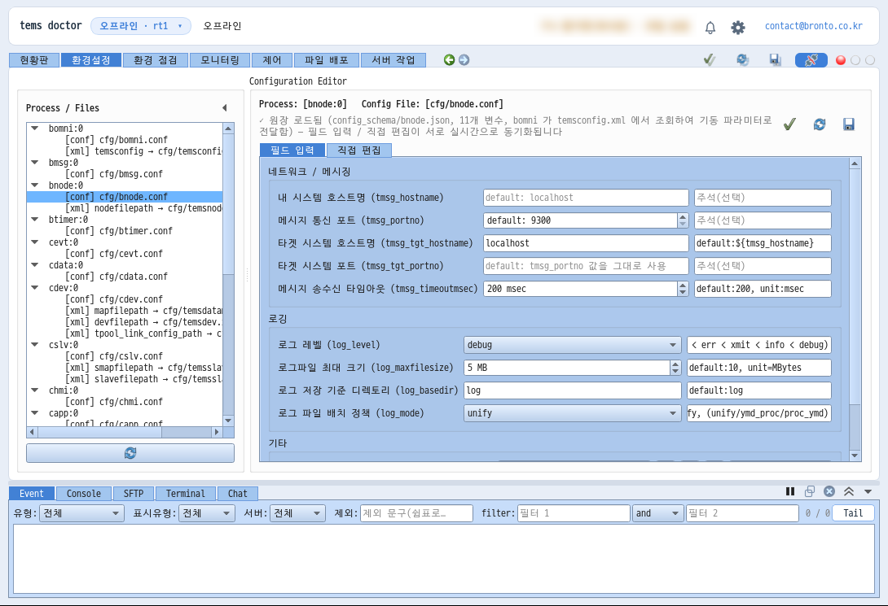
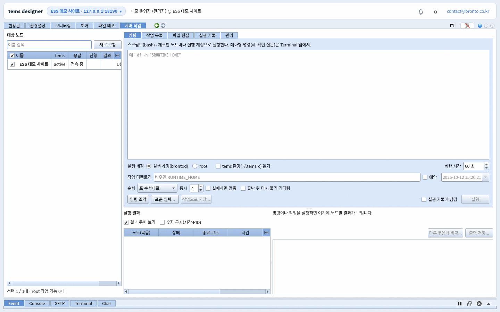
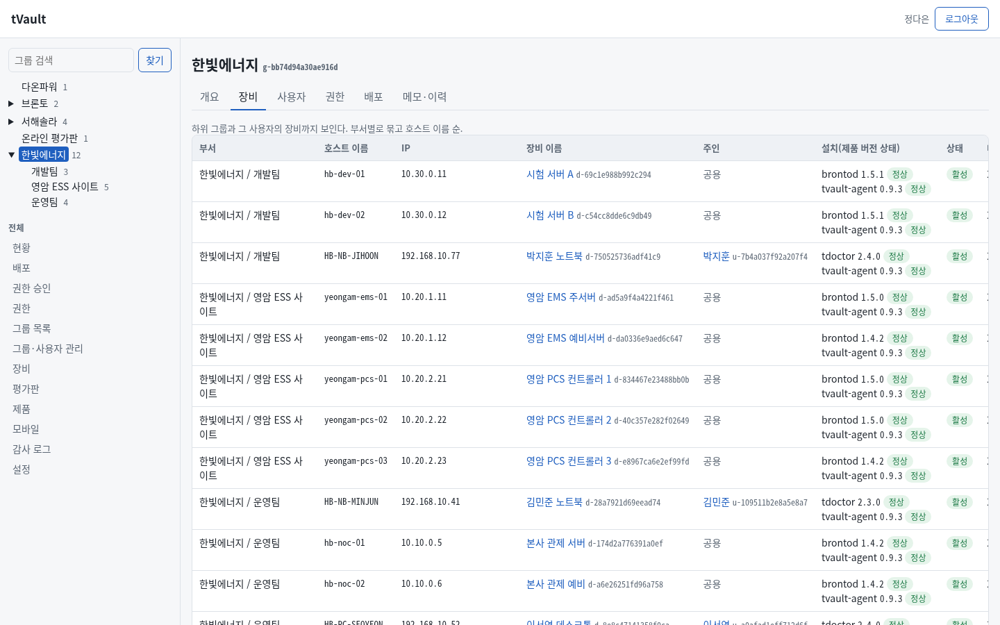
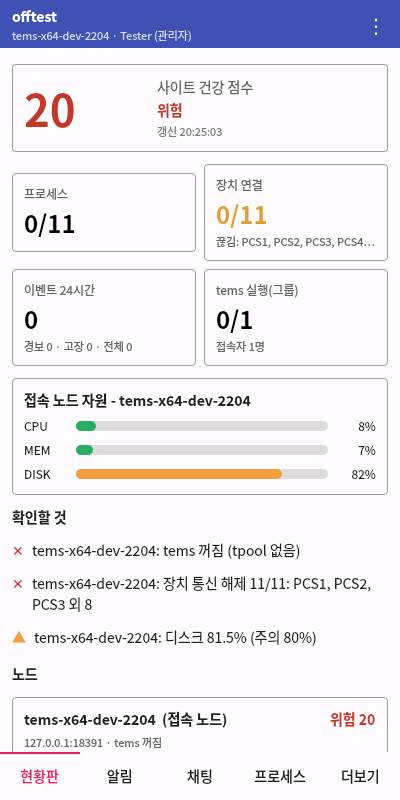
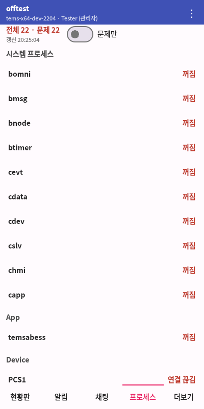
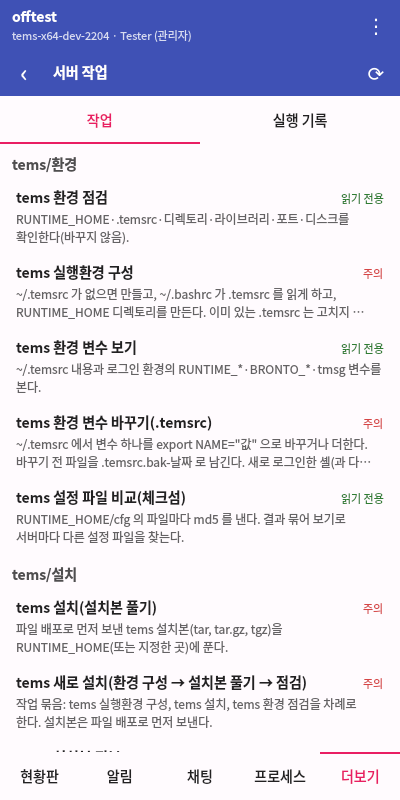
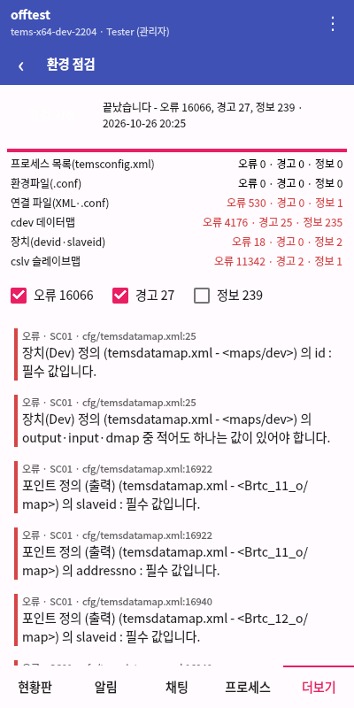

운영자가 매일 하는 일을 한 프로그램에서
현황판 · 모니터링
그룹의 모든 노드 상태를 한 화면에 모으고, 주의가 필요한 항목을 먼저 보여줍니다. 항목을 누르면 바로 그 노드의 해당 화면으로 들어가 조치합니다.
- 사이트 건강 점수, 노드별 상태 카드, tems 프로세스·장치 통신 요약
- 이벤트 24시간 히트스트립과 최근 이벤트(유형별 색)
- 카드 끌어 옮기기·크게 보기, 관제 모드(전체 화면·큰 글자)
- 노드 100대 이상 - 작게 보기 자동 전환, 상위 N 자원, 10열 확대 창
- 서버별 색 테마로 현장 혼동 방지, 연결 끊김은 따로 표시

tems 환경 점검 NEW
tems 환경설정을 temsconfig.xml 부터 연결된 모든 파일(XML·.conf)까지 한 번에 점검합니다. tems 가 설정을 버리거나 기동·제어가 실패할 문제(오류), 동작은 하지만 의도와 다를 수 있는 것(경고), 참고(정보)로 나눠 알려 줍니다.
- 프로세스 목록 → 환경파일 → 연결 파일 → 데이터맵 → 장치 → 슬레이브맵 6단계
- 규칙 번호·파일·줄로 결과를 보이고, 두 번 누르면 그 줄을 편집기에서 연다
- 장치 slave_id, 데이터맵 비트 넘침, tpool 링크 대상 등 파일 사이 관계까지
- 보고서로 저장해 현장 점검 기록으로 남긴다

검증되는 설정 편집
tems 설정 파일을 텍스트로 직접 고치지 않고, 항목별 설명과 허용 범위가 붙은 화면에서 편집합니다. 데이터맵·슬레이브맵처럼 수천 줄짜리 XML 도 표로 1초 남짓에 열고, 장치별로 나눠 봅니다.
- 프로세스별 설정 · XML 레코드를 표로 편집, 원문 직접 편집(줄 번호)
- 값 형식·범위 검증, 저장 전에 환경 점검과 같은 규칙으로 파일 검사
- 잘못된 줄을 두 번 누르면 그 행으로 이동

오프라인 모드 NEW
서버(brontod)에 접속하지 않고 PC 의 tems 설정 폴더를 바로 열어 편집하고 점검합니다. 현장 출동 전에 사무실에서 설정을 준비하거나, 인터넷이 안 되는 곳에서 작업할 때 씁니다.
- 접속 창의 [오프라인으로 열기…] 또는 실행 옵션으로 로컬 작업 폴더 지정
- 환경설정·환경 점검을 온라인과 같은 화면으로
- 나중에 접속해 파일 배포로 서버에 반영

프로세스 제어
tems의 각 프로세스 상태를 실시간으로 보고, 시작 · 중지 · 재시작을 원격에서 실행합니다.
- 프로세스별 실행 상태 · Copy No · 자원 사용량
- 시작 · 중지 · 재시작 원격 실행
- 제어 권한 요청 · 승인으로 동시 조작 방지

파일 배포 · 백업 · 롤백
새 버전 파일을 여러 서버에 한 번에 배포하고, 배포 전 상태를 자동으로 보관합니다. 문제가 생기면 이전 상태로 되돌립니다.
- 다중 서버 일괄 배포, 노드 기준 전체 진행률
- 배포 전 자동 백업 · 롤백 · 배포 뒤 재시작
- 보관 용량 한도 관리

서버 작업 · 원격 설치·업그레이드
자주 쓰는 점검 명령을 작업으로 등록해 두고, 서버를 골라 실행한 뒤 결과를 바로 확인합니다. brontod 를 새 서버에 원격으로 설치하고 그룹에 가입시키거나, 여러 서버를 한 번에 업그레이드합니다.
- 내장 작업: tems·brontod 설치 · 환경 · 운영 묶음
- 다른 서버(SSH) 작업 - 여러 대상과 대상별 SSH·sudo 비밀번호
- brontod 업그레이드: 바뀐 파일만 미리 보내 동시 교체·즉시 재시작
- 임베디드 장비(dropbear·busybox)도 원격 설치·가입 점검

계정 · 그룹 · 팀 채팅
운영 팀원마다 계정을 두고 그룹 단위로 서버 접근을 나눕니다. 같은 서버를 보는 팀원끼리 바로 대화합니다.
- ID 또는 이메일로 로그인, 계정 · 그룹별 접근 권한
- 그룹 허브 연결 - 허브 한 곳이 상태·이벤트를 중계해 대규모 그룹도 가볍게
- 가입 요청 승인 · 여러 노드의 brontod 재시작·정지 · 다른 그룹으로 옮기기
- 위험한 명령은 서버(brontod)에서 한 번 더 검증, 그룹 채팅으로 조치 공유

tVault 와 함께 - 배포·라이선스 NEW
tdoctor 와 brontod 는 tVault 로 설치하고 업데이트합니다. 고객사 서버의 brontod 는 고객 담당자가 승인한 장비만 정한 시각에 바뀝니다. tdoctor 는 tVault 라이선스로 Basic · Pro 를 나눕니다.
- 설치 파일 하나로 tdoctor 설치 · 시작 메뉴 · 알림 영역 아이콘
- 업데이트 알림: 지금 · 나중에 · 건너뛰기, 변경 사항 보기
- Pro: 여러 노드 파일 배포·서버 작업 / Basic: 한 노드씩
- 라이선스 파일 서명·PC 확인, 복사본은 Pro 평가판 10일

휴대폰에서도 - tdoctor Android 앱
현황판과 알림을 휴대폰에서 확인하고, 이동 중에도 프로세스 시작·정지와 서버 작업, 환경 점검까지 처리합니다. 백그라운드에서도 tems 고장·경보와 채팅을 폰 알림으로 받습니다.




PC · tdoctor
Windows · Linux 운영자 PC에서 전체 기능을 사용합니다. 한국어·영어·일본어·중국어 화면, 언어별 고정폭 글꼴 동봉.
서버 · brontod
tems가 동작하는 x64 · ARM64 Linux 서버와 임베디드 컨트롤러에 설치합니다. 시스템 자원을 1초마다 모아 60분 보관합니다.
모바일 · Android
비밀번호는 Android Keystore 로 암호화해 저장하고 자동 로그인합니다. 알림·채팅·프로세스·서버 작업·파일 배포·그룹 관리·환경설정.
단독으로, 또는 tems와 함께
tOps 단독
- 이미 tems 서버를 운영 중인 경우
- 여러 현장의 운영 업무를 한곳으로 모을 때
- 현장 방문 없이 장애에 대응하고 싶을 때
tOps를 직접 써보세요
문의하시면 실제 화면으로 운영 흐름을 보여드립니다.